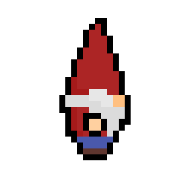
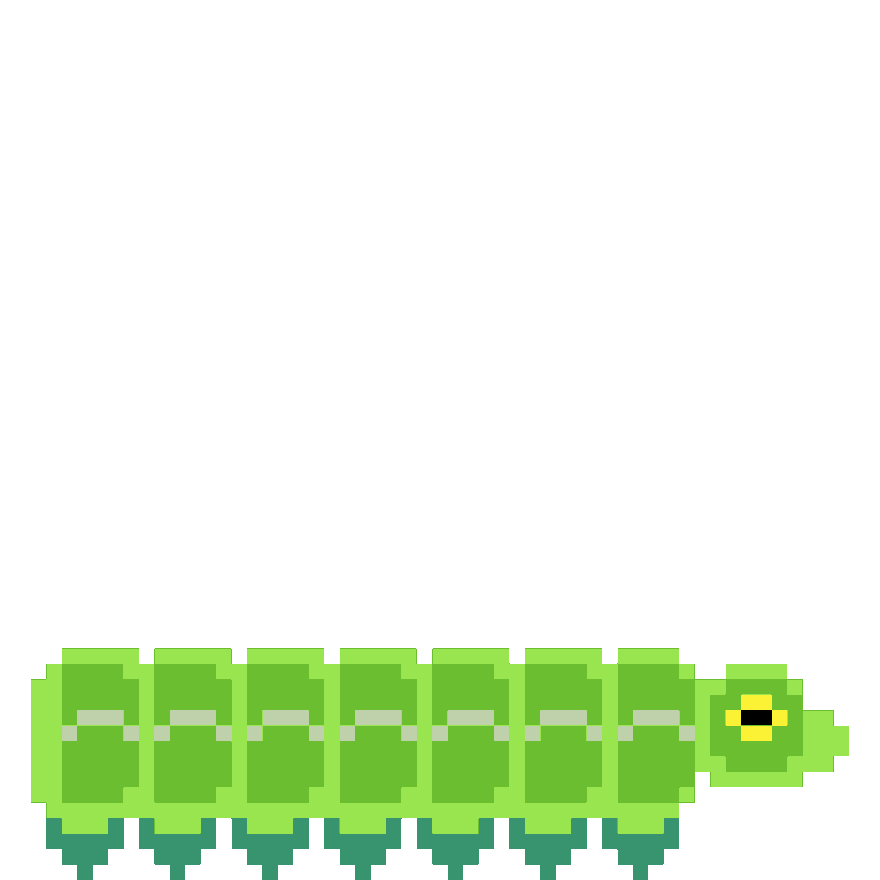
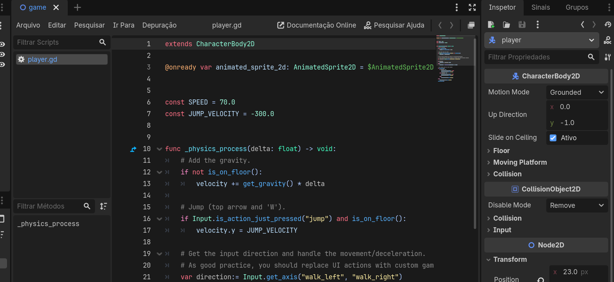

PROJETOS
#01 - Gnomo Infinito
Jogo que está sendo feito pela equipe obscure e produzido na plataforma Godot. O jogo apresenta o tipo de câmera principal em plataforma e topdown como secundária, além de um estilo pixel-art.

Minhas contribuições principais estão na parte de desing e animação. Como essa lagarta.

#02 - Projeto jogo teste
Como forma de treinar minhas habilidades em game dev, venho desenvolvendo um projeto teste, onde através de tutoriais de Godot, GD Script, Pixel-art e outros, para aplicar em jogos teste.
Principal vídeo de inspiração: youtube.com/watch?v=O7R87B_xCs8&list=PLNlPErl_v81vNINVVotsh0nYBBSp4LEgY
